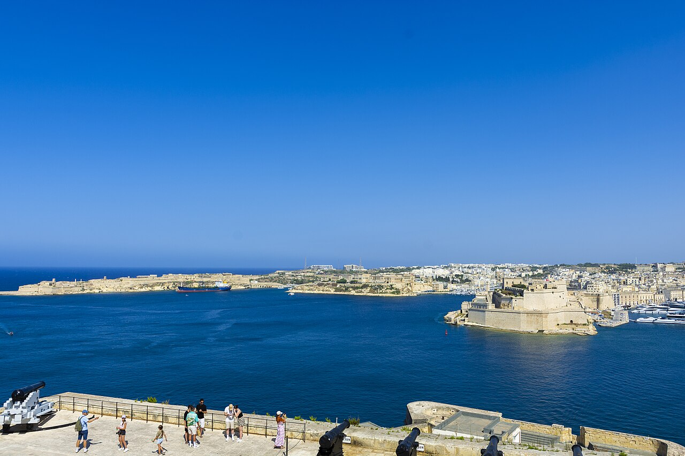

Malta · 5-day family itinerary
Four nights in Valletta, one anchor a day, a split Hypogeum morning because under-sixes are not admitted, and Gozo as a single fast-ferry day rather than a second base.

Photo: Trajcinema, Valletta Grand Harbour from Upper Barrakka Gardens, CC BY 4.0, via Wikimedia Commons.

Checked before you commit
This illustrative route keeps one base in Valletta for four nights and treats Gozo as a day trip. Heritage Malta’s pages for the Ħal Saflieni Hypogeum, Ħal Tarxien, Ġgantija and Fort St Elmo, St John’s Co-Cathedral’s visiting rules, the Saluting Battery’s gun times, Gozo Highspeed, Gozo Channel, Valletta Ferry Services and Malta Public Transport’s fares page were checked against official pages on 19 October 2026. Nothing was booked.
Days 1–2 stay on foot in Valletta. Day 3 is a split morning in Paola: the Hypogeum for the adult and child old enough to enter, Ħal Tarxien nearby for the other adult and the four-year-old. Day 4 is the only sea crossing, Valletta to Gozo by fast ferry, with Gozo Channel as the slower fallback. Day 5 stays close to the hotel before the airport.
One anchor a day for an eight-year-old and a four-year-old: St John’s and the noon gun, the Hypogeum split, Gozo’s Ċittadella and Ġgantija, then Fort St Elmo. Afternoons stay free for rest, shade and the harbour catamarans.
Flights, hotels, ferry seats and Hypogeum tour slots were not checked for your dates. Hypogeum tickets are limited, non-refundable and usually booked weeks ahead. A booking-hub link is intent only. It doesn’t hold a tour slot.
Planning boundary: dates are illustrative. The worked example runs Monday 10 to Friday 14 May 2027. Gozo Channel’s current schedule runs only to 8 November 2026, and Heritage Malta publishes site hours on a separate opening-hours page, so reopen both before you travel. Heritage Malta says last admission at all its museums and sites is 30 minutes before closing. Alfred does not check attraction age limits, tour availability or ferry departures while it writes the day. Book opens a partner checkout. It does not prove a booking exists. Malta is not one of the destination guides in the signed-in app.
Route and family-coordination brief
Party: two adults, one eight-year-old and one four-year-old. Base: four nights in Valletta, within walking distance of St John’s, Upper Barrakka and the ferry landings. Pace: moderate, one anchor a day. Budget input: Mid Range. Published attraction prices appear only where an official page states them; nothing is totalled as a family quote.
Getting around: Malta Public Transport sells travel cards at its sales offices in the airport’s Welcomer’s Hall and baggage reclaim and at the Valletta terminal, and single fares can be paid on the bus in cash or by contactless card. Its Explore Child Card covers children aged 4 to 10, and children under 4 travel free. Valletta Ferry Services runs two catamaran routes, Sliema–Valletta and Valletta–Three Cities, with half-hourly daytime departures in its published tables. Gozo Highspeed lists Valletta to Gozo at 45 minutes.
Age rules change across the week, so write them on the cards. The Hypogeum does not admit children under 6, and Heritage Malta’s terms say children aged 6 to 13 must be accompanied by an adult (its access statement says 6 to 15; plan to the stricter reading). St John’s lets children under 12 in free with an adult. The Saluting Battery’s child ticket covers ages 5 to 15. Ġgantija, Ħal Tarxien and Fort St Elmo list infants aged 1 to 5 as free. Gozo Channel sells the child fare for ages 3 to 12 only at its Mġarr booths on Gozo.
Day 1 — Land at Malta International Airport and stay in Valletta
After landing, decide between a taxi with the luggage or the bus. If you will ride buses this week, buy travel cards at the Malta Public Transport sales office in the airport’s Welcomer’s Hall: an Explore Child Card for the eight-year-old, while the four-year-old rides free. Check in near the top of Valletta so tomorrow needs no transport at all.
Keep the evening short: a walk to Upper Barrakka Gardens for the view across the Grand Harbour to the Three Cities, then an early dinner close to the hotel.
Fallback: if the flight lands late, go straight to the hotel and move the gardens to tomorrow’s noon-gun stop.
Live-check: Malta Public Transport’s journey planner and 2027 card prices (the fare note we opened is dated to June 2026); hotel access and drop-off with luggage.
Day 2 — St John’s at opening, then the noon gun
Walk to St John’s Co-Cathedral for its 9.00 am opening. It lists Monday to Saturday hours of 9.00 am to 4.45 pm with last admission at 4.00 pm, and it is closed on Sundays and public holidays. Children under 12 enter free with an adult, and staff may ask for documentation for a child ticket. It is a church: bring a shawl to cover, skip stiletto or narrow heels, and leave food, drinks and large wheeled bags behind, because there are no lockers. The cathedral suggests about an hour and 45 minutes. With a four-year-old, pick a few audio-guide stops and leave before attention runs out.
Then walk to the Saluting Battery below Upper Barrakka for the 12.00 gun display. The battery recommends buying entry in advance and arriving about 15 minutes before, says on-site sales are card-only, and lists a child ticket for ages 5 to 15. Keep the afternoon for rest or a short Valletta–Sliema catamaran ride.
Fallback: if the noon crowd is too much, the battery also lists a 4.00 pm display. If St John’s queue is long, swap the order and go after lunch, still before the 4.00 pm last admission.
Live-check: Malta public holidays for your dates; the cathedral’s own museum is currently closed for extension and refurbishment; the Saluting Battery’s closures page.
Day 3 — Split the Hypogeum morning, then the Three Cities by catamaran
The Ħal Saflieni Hypogeum in Paola does not admit children under 6, so this morning splits by design. One adult and the eight-year-old take a pre-booked Hypogeum tour. Heritage Malta’s access statement describes a 12-minute audio-visual introduction followed by a tour of about 35 minutes, for 10 visitors at a time. Its terms say tours start strictly on time, visitors should be on site 15 minutes early, late arrivals may be refused, and tickets are not refunded or exchanged. Wear closed, comfortable shoes; sandals and flip-flops are not admitted, and bags go into lockers.
The other adult and the four-year-old visit the Ħal Tarxien Prehistoric Complex, which Heritage Malta places just minutes away and where infants aged 1 to 5 enter free. Meet afterwards, then head back to Valletta and take the Valletta Ferry Services catamaran across to the Three Cities for an easy waterfront afternoon.
Fallback: if Hypogeum tickets are gone for your dates, do not build the day around last-minute tickets. They cost €50, go on sale only the day before on a first-come, first-served basis, and sell from Fort St Elmo and the Gozo museum shop until 12 pm. Visit Ħal Tarxien together instead.
Live-check: Hypogeum tour times on Heritage Malta’s booking page (the access statement lists hourly tours from 9.00 am to 4.00 pm, but it dates from 2022); bus routes to the ‘Ipoġew’ stop (the terms name routes 81 and 82 from Valletta); Ħal Tarxien hours on the opening-hours page.
Day 4 — Gozo by fast ferry: Ċittadella and Ġgantija
Take a morning Gozo Highspeed catamaran from Valletta. The operator lists the crossing at 45 minutes, closes online bookings 20 minutes before each departure, and closes its ticket booth and boarding 2 minutes before departure. A Malta Public Transport shuttle bus connects the fast ferry with Victoria. Walk up into the Ċittadella first. Heritage Malta says the Gozo Museum of Archaeology there closed on 13 April for its next phase, while the Ċittadella combo ticket is unchanged.
After lunch, go out to Ġgantija Archaeological Park in Xagħra. Heritage Malta puts the nearest bus stop 2 minutes away on foot, sells a combo ticket with Ta’ Kola Windmill, and lists infants aged 1 to 5 as free. Leave Ġgantija with time to get back to the fast-ferry terminal for the return you wrote down as your last one.
Fallback: if the fast ferry is full or cancelled, Gozo Channel crosses from Mġarr to Ċirkewwa in about 25 minutes, daily, with no reservations; boarding is first come, first served. Buy the eight-year-old’s child ticket at the Mġarr booth (it is not sold online), and allow for the road leg from Ċirkewwa back to Valletta in Malta Public Transport’s journey planner. Drop Ġgantija before you drop the margin.
Live-check: Gozo Highspeed’s timetable for your date; Gozo Channel’s schedule for 2027; Ġgantija and Ċittadella hours on Heritage Malta’s opening-hours page.
Day 5 — Fort St Elmo, then the airport
Walk to Fort St Elmo and the National War Museum at the tip of Valletta. Heritage Malta lists a child ticket for ages 6 to 11, infants aged 1 to 5 free, and the nearest bus stop about 10 minutes away on foot, so walking from a Valletta hotel is simpler. The World War I display in Section 4 is closed until further notice. Keep the visit to a morning, then collect bags and leave for the airport with a clear buffer.
If the flight is in the afternoon, the fort is the flexible anchor. The airport transfer is not.
Fallback: if packing runs long, skip the fort and spend an hour at Upper Barrakka or on the Valletta–Sliema catamaran close to the hotel.
Live-check: Fort St Elmo’s hours on the opening-hours page; your airline’s check-in cut-off; the taxi or bus time to the airport on the day.
Planning notes
Dates are illustrative. At decision time, recheck Heritage Malta’s opening hours and special notices, Hypogeum tour availability, St John’s Co-Cathedral’s hours and public-holiday closures, the Saluting Battery’s display times, Gozo Highspeed and Gozo Channel schedules, and Malta Public Transport fares. A travelling profile is required, and the adults, children and ages Alfred plans for come from the travellers on that profile. Alfred does not check whether a site admits a four-year-old. On web Lets Go, Holiday takes origin, destination, dates, a budget step and a day pace, then Plan my trip queues the itinerary. Moderate day pace fills a morning and an afternoon slot, with lunch and dinner. The Estimated costs bar, when it appears, is a rounded median of flight-and-hotel packages, not a quote. While the trip is still Planning, you can keep or change the hotel and then the flights Alfred picked. Holiday takes one destination, so Gozo stays as a day card under the Valletta base unless you rebuild the route in Multi-city with cities picked from city search. Once the trip is ACTIVE, it can be viewed, edited and shared. You can edit an item’s title, times and notes, so “Hypogeum 10.00 — one adult and the eight-year-old; on site by 9.45; closed shoes” can sit on the card itself. Book opens a partner checkout for flights and hotels, activities, eSIMs and travel insurance. It doesn’t reserve a Hypogeum slot. Malta is not one of the destination guides in the signed-in app.
Plan a trip
Start with your people, dates and pace, then review the editable plan before booking.
Plan a trip